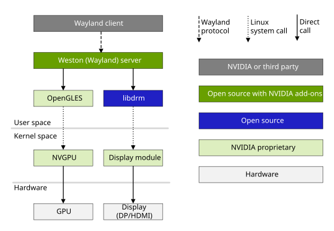

Weston (Wayland)#
Wayland is a protocol for communication between a display server and its clients. A Wayland server uses the Wayland protocol to communicate with a GUI program, which is a Wayland client. A Wayland server is also called a Wayland compositor, as it also acts as a compositing window manager.
The Weston server, usually just called Weston, is the reference implementation of a Wayland compositor. It manages the displays, including composition of their contents, support for their input device events (touch screen, mouse, keyboard, etc.), and their settings (wallpapers, resolution, multi-monitor display, etc.).
Weston is lightweight compared to X11, and is fast as a compositor. It is suitable for many embedded and mobile use cases.
The current release of Jetson Linux supports Weston 13.0.
Weston/Wayland Architecture#
A Wayland server and a set of Weston libraries are collectively known as Weston/Wayland. This diagram describes the Weston/Wayland architecture.

The Wayland server libraries implement the Wayland protocol for Weston. The Weston libraries implement the Wayland compositor, which uses the Linux Kernel Mode Setting (KMS) for setting up the display, performs the compositing using OpenGL® ES and Direct Rendering Manager (DRM), and manages the Linux input devices.
The Wayland client application uses the Wayland protocol to communicate with the Wayland compositor. It may be an EGL™ application, an X server (rootless), or another type of display server.
Shells#
Weston supports different graphical user interfaces through shell plugins. NVIDIA distributes it with two plugins: the Desktop shell and the IVI shell.
The Desktop and the IVI shell each provides its own Wayland protocol interface for Wayland clients. Thus a Wayland client written for a specific shell protocol does not work with others.
The desktop shell provides a modern desktop environment similar to X11,
plus interfaces to the keyboard and mouse. It is implemented by the library
desktop-shell.so. A
special desktop shell client, weston-desktop-shell,
renders the wallpaper, panel, and other desktop elements.
IVI shell is designed for In-Vehicle Infotainment (IVI) applications.
It provides a GENIVI Layer Manager-compatible API through its controller
modules, and a simple protocol for use by IVI applications. It is implemented
by the library ivi-shell.so.
Configuration#
The user can configure the the weston shell’s look and behavior preferences through /etc/xdg/weston/weston.ini file.
Please refer to Ubuntu weston.ini manpage to know more about how to configure it.
Environment Variables#
WAYLAND_DEBUG: If set to any value, causes libwayland to print the live protocol to stderr.
XDG_RUNTIME_DIR: The directory for Weston’s socket and lock files. If this variable is set, Weston creates its socket under this directory, and Wayland clients use the socket from this directory to communicate with Weston.
GBM#
Generic Buffer Management (GBM) is a memory allocation API developed as a component of the Mesa open source project.
The libgbm library provides a driver-dependent API to allocate buffers and provides a GBM handle to the buffers. The library allows you to create buffers for different use cases, including scanout, rendering, cursors, and CPU-access. Weston depends on libgbm for buffer allocation and for its swapchain.
Recently, NVIDIA submitted a merge request (https://gitlab.freedesktop.org/mesa/mesa/-/merge_requests/9902) to the Mesa open-source community to discover and load the alternate GBM backend at runtime. After this request was merged, NVIDIA implemented its own NVGBM backend, which supports the allocation of the nvidia_drm driver.
With the addition of the NVGBM backend, the EGL_KHR_platform_gbm extension has also been enabled. Now, the gbm_device and gbm_surface handles that GBM creates can be used to initialize the EGL and to create render target buffers with the support of the EGL_KHR_platform_gbm extension. Refer to https://www.khronos.org/registry/EGL/extensions/KHR/EGL_KHR_platform_gbm.txt for more information.
With the libgbm library from Mesa open-source community, the NVGBM backend, and the EGL_KHR_platform_gbm extension support, Weston creates EGLDisplay with gbm_device and allocates the EGLSurface from gbm_surface and calls eglSwapBuffers API with the EGLSurface during the repaint cycle. This process is known as the GBM swapchain.
Custom Upgrades by NVIDIA#
Enhanced Downscaling Quality with GL Renderer#
When using the default GL composition shaders in Weston 13, the downscaling quality becomes suboptimal for scaling factors of 4x or greater. To improve the visual output, NVIDIA has integrated a custom 5-tap filter into the fragment shader. This filter is automatically applied when the downscaling factor reaches or exceeds 4x, significantly improving the visual quality for downscaled content.
Socket Naming Adjustment#
By default, Weston looks for available Wayland socket names from wayland-1 to
wayland-32 to prevent conflicts when a computer with a running Wayland compositor
is accessed via other methods (such as an X session on a different virtual terminal, or over SSH).
In L4T, this mechanism is unnecessary and leads to issues. Most of our client applications
(such as nvgldemo and Wayland test apps) fail to start correctly unless the socket is
named wayland-0. To address this, Weston has been configured to prioritize wayland-0
as the preferred socket name to ensure smooth operation of these applications, avoiding the
need to manually set the WAYLAND_DISPLAY environment variable.
Running Weston#
There are two ways to launch Weston, described in the following subsections.
To launch Weston with a script#
Enter this command to launch Weston:
$ nvstart-weston.sh
The script may ask for your password to run some preliminary steps, such as modprobing the display driver and adding your username to proper group. It may also ask you to reboot after a fresh flash of BSP.
Note
This script launches Weston with
desktop-shell, without any additional options. If you want to run different shell or with options, such as--modules, you must use the manual procedure described in the next section.Enter this command to run a Wayland client:
$ weston-simple-egl
Note
You do not need to use
sudoor set the environment variableXDG_RUNTIME_DIRto run a client when you have launched Weston with thenvstart-weston.shscript.
To launch Weston manually#
If the X server is running, stop it:
$ sudo service gdm stop; sudo pkill -9 Xorg
Modprobe the
nvidia_drmdriver:$ sudo modprobe nvidia_drm modeset=1
Set up the environment and directory permissions:
$ unset DISPLAY $ mkdir /tmp/xdg $ chmod 700 /tmp/xdg
Launch Weston.
To launch Weston as a root user, enter this command:
$ sudo XDG_RUNTIME_DIR=/tmp/xdg weston --idle-time=0 &
Optional: Set the environment variable ‘WAYLAND_DEBUG’ to ‘server’ to dump protocol messages from the server to ‘stderr’:
$ WAYLAND_DEBUG=server
Optionally, Weston can be launched as a non-root user as below:
$ XDG_RUNTIME_DIR=/tmp/xdg weston --idle-time=0 &
Run a Wayland client:
$ sudo XDG_RUNTIME_DIR=/tmp/xdg weston-simple-egl
Note
Using
sudoto launch the client is unnecessary when Weston is run as a non-root user.Optional: Set the environment variable
WAYLAND_DEBUGto 1 to dump all protocol messages tostderr:$ WAYLAND_DEBUG=1
To launch Weston with ivi-shell and ivi-controller on the device, pass these arguments to the Weston binary:
--shell=ivi-shell.so --modules=ivi-controller.so
Multiple Display Heads#
Weston supports multiple display heads with multiple overlays on all Jetson devices.
Use weston.ini to set the expected resolution and orientation of the monitors.
If multiple displays are connected, applications are launched on the one that contains the mouse pointer at the time of launch. Once an application is launched, you can drag it across a boundary between displays.
If multiple displays are connected and they have different resolutions, Weston reports the frame rate of the display on which more than 50% of its window is displayed.
If a monitor is removed while Weston is running (hot removal), running applications dynamically shift to the remaining active monitor.
Example of weston.ini Display Options#
Use this example as a model for setting your own display options in
weston.ini:
name=HDMI-A-1
mode=1920x1080@60.0
transform=90 (0,90,180,270)
Hot-Plugging#
Weston monitors events sent by the Direct Rendering Manager (DRM)
subsystem using udev. When the display configuration changes, udev
receives a HOTPLUG event. It calls drmModeGetResources() to identify
connectors that have been added or removed, and takes actions
accordingly.
Verified Use Cases#
Disconnect and connect the HDMI® display after launching Weston.
Disconnect and connect the HDMI display while the application
nvgldemois running, and verify that application drawing is visible after connection.Launch Weston without an HDMI display connected and then connect an HDMI display.
Launch Weston without an HDMI display connected, launch the nvgldemo application, and then connect an HDMI display.
All of the use cases above are also verified with DisplayPort displays.
Compositing Mode in Weston#
Jetson devices have multiple planes per head. The major types of planes are:
Primary plane
Overlay plane
Cursor plane
On every frame, Weston evaluates all surfaces and views and chooses one of these strategies to composite them:
Overlay-only mode: Weston tries to assign a plane for each surface or view. If that is not possible, it shifts to “mixed mode.”
Mixed mode: Weston tries to assign overlay plane(s) to some of the surfaces and views, composite the remaining surfaces and views using GL, and update the result to the primary plane. If that is also not possible, it proceeds with “GL-only mode.”
GL-only mode: Weston composites all of the surfaces and views using GL, and updates the result to the primary plane.
With all of these strategies, Weston makes sure to preserve the rendering order of the surfaces and views.
You can force “GL-only mode” compositing by setting the
environment variable WESTON_FORCE_RENDERER to 1.
The demo application weston-simple-dmabuf-egldevice demonstrates
mixed-mode compositing in Weston, where some surfaces are assigned
overlay planes and others are composited with GL to the primary plane.
You can use the application weston-debug to verify that overlay planes
are being assigned. Use the following procedure:
Stop X if it is running and prepare the device for launching Weston:
$ sudo service gdm stop; sudo pkill -9 Xorg $ unset DISPLAY $ mkdir /tmp/xdg $ chmod 700 /tmp/xdg
Modprobe the
nvidia_drmdriver:$ sudo modprobe nvidia_drm modeset=1
Launch Weston with the
--debugswitch:$ sudo XDG_RUNTIME_DIR=/tmp/xdg weston --idle-time=0 --debug &
Launch a few Weston client applications:
$ sudo XDG_RUNTIME_DIR=/tmp/xdg weston-simple-egl & $ sudo XDG_RUNTIME_DIR=/tmp/xdg weston-simple-dmabuf-egldevice & $ sudo XDG_RUNTIME_DIR=/tmp/xdg weston-simple-dmabuf-egldevice & $ sudo XDG_RUNTIME_DIR=/tmp/xdg weston-simple-dmabuf-egldevice &
Run the
weston-debugapplication:$ sudo XDG_RUNTIME_DIR=/tmp/xdg ./weston-debug -a
Look for information like that shown below in the
weston-debugoutput. Blue colored surfaces are overlay-composited and green-colored surfaces are GL-composited:Layer 5 (pos 0x50000000): View 0 (role xdg_toplevel, PID 8080, surface ID 3, top-level window 'simple-dmabuf-egldevice', 0x33c798b0): position: (714, 860) -> (970, 1116) [not opaque] outputs: 0 (HDMI-A-1) (primary) dmabuf buffer format: 0x34325258 XRGB8888 modifier: 0x3800000000fe014 View 1 (role xdg_toplevel, PID 8073, surface ID 3, top-level window 'simple-dmabuf-egldevice', 0x33bb9500): position: (209, 591) -> (465, 847) [not opaque] outputs: 0 (HDMI-A-1) (primary) dmabuf buffer format: 0x34325258 XRGB8888 modifier: 0x3800000000fe014 View 2 (role xdg_toplevel, PID 8066, surface ID 3, top-level window 'simple-dmabuf-egldevice', 0x31769110): position: (1129, 339) -> (1385, 595) [not opaque] outputs: 0 (HDMI-A-1) (primary) dmabuf buffer format: 0x34325258 XRGB8888 modifier: 0x3800000000fe014 View 3 (role xdg_toplevel, PID 8051, surface ID 9, top-level window 'simple-egl', 0x314c6430): position: (1343, 642) -> (1593, 892) [not opaque] outputs: 0 (HDMI-A-1) (primary) EGL buffer Layer 6 (pos 0x2): ... [view] evaluating view 0x33c798b0 for output HDMI-A-1 (0) [view] view 0x33c798b0 format: XRGB8888 [overlay] provisionally placing view 0x33c798b0 on overlay 4002 in mixed mode [view] evaluating view 0x33bb9500 for output HDMI-A-1 (0) [view] view 0x33bb9500 format: XRGB8888 [overlay] provisionally placing view 0x33bb9500 on overlay 4001 in mixed mode [view] evaluating view 0x31769110 for output HDMI-A-1 (0) [view] view 0x31769110 format: XRGB8888 [overlay] not placing view 0x31769110 on overlay: no free overlay planes [view] evaluating view 0x314c6430 for output HDMI-A-1 (0) [overlay] not placing view 0x314c6430 on overlay: couldn't get fb [repaint] Using mixed state composition [repaint] view 0x33c798b0 on Overlay plane 4002 [repaint] view 0x33bb9500 on Overlay plane 4001 [repaint] view 0x31769110 using renderer composition [repaint] view 0x314c6430 using renderer composition
DMA Buffer Rendering#
DRM now supports NV16 and NV24 color formats. To use these formats,
construct an EGLImage from the DMA buffer via the exposed
EXT_image_dma_buf_import and EXT_image_dma_buf_import_modifiers
extensions.
Currently only block-linear DMA buffer layouts are supported.
DRM_FORMAT_NV21, DRM_FORMAT_NV16, and DRM_FORMAT_NV24 have been added to
supported_drm_formats.
To run a verified use case (video playback test)#
Enter this command:
$ gst-launch-1.0 filesrc location=<mp4_src_file> ! qtdemux ! h264parse ! nvv4l2decoder ! nvvidconv ! 'video/x-raw(memory:NVMM), width=(int)1280, height=(int)720, format=(string)<format>' ! nvdrmvideosinkWhere:
<mp4_src_file>is the pathname of the apt source file<format>isNV16orNV24.
The gst-launch-1.0 command is a GStreamer pipeline to display video. It
uses the nvvidconv plugin to convert other formats in the stream to
NV16/NV24. The video is displayed with the nvdrmvideosink plugin, which
internally uses DRM.
To run a sample case#
Run the
weston-simple-dmabuf-egldeviceapplication with the-pswitch.To verify the correctness of the result, examine it on the screen.
Current Limitations#
HDCP currently is not supported. It will be supported in a later release.
Weston dma-buf Support#
Clients can post dma-buf buffers to Weston using the Linux DMA-BUF Unstable V1 Protocol of Wayland. Dma-buf support with Weston has following components.
Buffer Allocation#
GBM is commonly used to allocate buffers, which are backed by the dma-buf file descriptor.
This code snippet shows how to allocate a buffer using GBM:
drm_fd = open("/dev/dri/card0", O_RDWR);
device = gbm_create_device(drm_fd);
bo = gbm_bo_create_with_modifiers(device, width, height, format, modifiers, modifiers_count);
Weston supports the formats DRM_FORMAT_XRGB8888 and DRM_FORMAT_ARGB8888.
A modifier is an encoding of vendor-specific buffer layout
parameters. Weston supports modifiers that are supported by DRM (see the
IN_FORMATS plane property blob) and by EGL (call
eglQueryDmaBufModifiersEXT() ).
Buffer Write/read from CPU#
You can use this API function to write data directly into a GBM buffer:
gbm_bo_write(bo, user_buffer, sizeof user_buffer);
You also can memory map a GBM buffer and get a CPU-accessible address to the data written to or read from it. The following code snippet shows how:
uint32_t dst_stride = 0;
void *gbo_mapping = NULL;
// Map bo to CPU accessible address.
char *dst_ptr = gbm_bo_map(bo,
0, 0,
width,
height,
GBM_BO_TRANSFER_READ_WRITE,
&dst_stride,
&gbo_mapping);
// Write data to or read data from dst_ptr.
. . .
// Unmap bo.
gbm_bo_unmap(bo, gbo_mapping);
Wayland Protocol to Post dma-buf Buffers to Weston#
Weston uses the Generic Buffer Management (GBM) library to allocate buffers, which are backed by dma-buf file descriptors. Client applications must call the following GBM functions to get the dma-buf file descriptor and associated parameters from the GBM buffer object. To post the dma-buf to a Wayland surface, the file descriptor and parameters must be provided via Linux DMA-BUF Unstable V1 Protocol.
The following code snippet shows the main calls involved:
stride = gbm_bo_get_stride_for_plane(bo, 0);
offset = gbm_bo_get_offset(bo, 0);
handle = gbm_bo_get_handle_for_plane(bo, 0);
modifier = gbm_bo_get_modifier(bo);
drmPrimeHandleToFD(drm_fd, handle, 0, &dmabuf_fd);
zwp_linux_buffer_params_v1_add(params, dmabuf_fds, 0, offset,
stride, modifier >> 32,
modifier & 0xffffffff);
zwp_linux_buffer_params_v1_create(params, width, height,
format, flags);
GL Renderer in Weston#
The GL renderer in Weston creates an EGLImage from a dma-buf object that
it receives with Linux DMA-BUF Unstable V1 Protocol using the
EGL_EXT_image_dma_buf_import and EGL_EXT_image_dma_buf_import_modifiers
extensions. Weston obtains the GL texture target to be used with this
EGLImage by calling eglQueryDmaBufModifiersEXT(), and binds the EGLImage
to the texture.
Display Hardware Compositing in Weston#
The DRM compositor in Weston calls drmModeAddFB2WithModifiers() to
associate a DRM frame buffer ID with the dma-buf it receives via Linux
DMA-BUF Unstable V1 Protocol. It then uses the frame buffer ID to present
the dma-buf to one of the available display hardware planes using
drmModeSetPlane(), in the legacy path, or drmModeAtomicCommit(), in the
atomic modeset path. This takes the form of a flip, where the reference
to the new buffer is swapped in during vblank.
Weston dma-buf Sample#
weston-dmabuf-formats is a simple application to test Weston dmabuf support
for different formats, such as XRGB8888, NV12, NV16, NV24.
Enter this command to launch the application:
$ sudo XDG_RUNTIME_DIR=/tmp/xdg weston-dmabuf-formats --import-format=<format> --loop=<count> --use-gbm
- Where:
<format>isNV16orNV24.<count>is number of iterations to execute.--use-gbmindicates that the application is to use GBM instead ofnvbuf_utilsfor buffer allocation.
weston-debug#
The client application weston-debug receives and prints debug messages
using the weston-debug protocol. For example, when Weston is
recompositing it prints all surface views and descriptions of the
decision process regarding their assignment to overlays and GL
compositing.
For weston-debug to work, you must run Weston with the --debug switch.
Do not use this switch in production.
You can pass weston-debug additional parameters to choose categories of
debug output to display:
$ sudo XDG_RUNTIME_DIR=/tmp/xdg weston --debug
$ sudo XDG_RUNTIME_DIR=/tmp/xdg ./weston-debug -a
Alternatively, you can enable Weston debug output by setting the
environment variable WAYLAND_DEBUG=server, and Weston client debug by
setting WAYLAND_DEBUG=1.
GNOME Wayland Desktop Shell Support#
Jetson Linux supports the GNOME Wayland windowing system. Jetson Linux support for GNOME Wayland is currently experimental.
This section describes the steps for enabling and using Gnome-Wayland.
To start the windowing system#
Enable Wayland in GDM config:
Set ``WaylandEnable=true`` in ``/etc/gdm3/custom.conf``.
Stop GDM:
$ sudo systemctl stop gdm
Kill X server:
$ sudo pkill X
Set experimental features in GSettings:
$ gsettings set org.gnome.mutter experimental-features [\"kms-modifiers\"]
(Optional) Set GSettings to disable screen timeout:
$ gsettings set org.gnome.desktop.lockdown disable-lock-screen true $ gsettings set org.gnome.desktop.screensaver ubuntu-lock-on-suspend false $ gsettings set org.gnome.desktop.screensaver lock-enabled false $ gsettings set org.gnome.desktop.session idle-delay 0 $ gsettings set org.gnome.desktop.screensaver idle-activation-enabled false
- Load NVIDIA DRM module::
$ sudo modprobe nvidia_drm modeset=1
Start GDM:
$ sudo systemctl start gdm